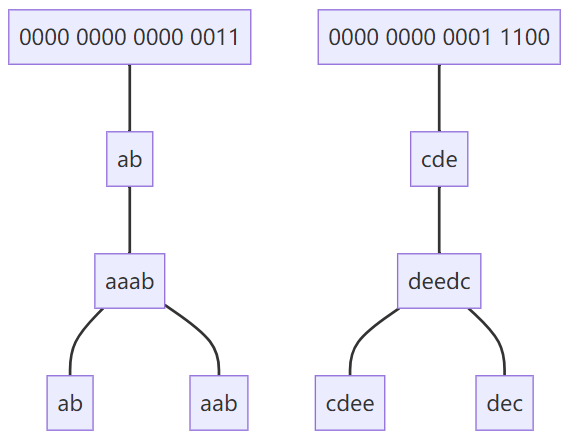

318. 最大单词长度乘积
给定一个字符串数组 words，找到 length(word[i]) * length(word[j]) 的最大值，并且这两个单词不含有公共字母。你可以认为每个单词只包含小写字母。如果不存在这样的两个单词，返回 0。
示例 1:
输入: ["abcw","baz","foo","bar","xtfn","abcdef"] 输出: 16 解释: 这两个单词为 "abcw", "xtfn"。
示例 2:
输入: ["a","ab","abc","d","cd","bcd","abcd"] 输出: 4 解释: 这两个单词为 "ab", "cd"。
示例 3:
输入: ["a","aa","aaa","aaaa"] 输出: 0 解释: 不存在这样的两个单词。
字符串整数编码，加哈希表同组合并。
[“aaab”,”ab”,”aab”,”cdee”,”deedc”,”dec”]
这一题中我们可以把word划分为两个层面：

flowchart
A0[0000 0000 0000 0011]---A1
A1["ab"]---A
A["aaab"]---B["ab"]
A["aaab"]---C["aab"]
D0[0000 0000 0001 1100]---D1
D1["cde"]---D
D["deedc"]---E["cdee"]
D["deedc"]---F[dec]
- 先将每个字符串编码为int
- 然后建立
- 最后嵌套遍历哈希表（此时哈希表的长度是独立组合的个数，如上图中的两个独立组合）
class Solution {
private:
int string2Int(string A)
{
int res = 0;
for (auto a : A)
{
res |= (0x1 << a-'a');
}
return res;
}
public:
int maxProduct(vector<string>& words) {
unordered_map<int,int> mp;
int res = 0;
//(chars, length)
for(auto word : words){
int temp = string2Int(word);
if(mp.count(temp)){
mp[temp] = max(mp[temp],(int)word.size());
}
else{
mp[temp] = word.size();
}
}
for(auto &a : mp){
for(auto &b : mp){
if(!(a.first&b.first)){
res = max(res, a.second*b.second);
}
}
}
return res;
}
};